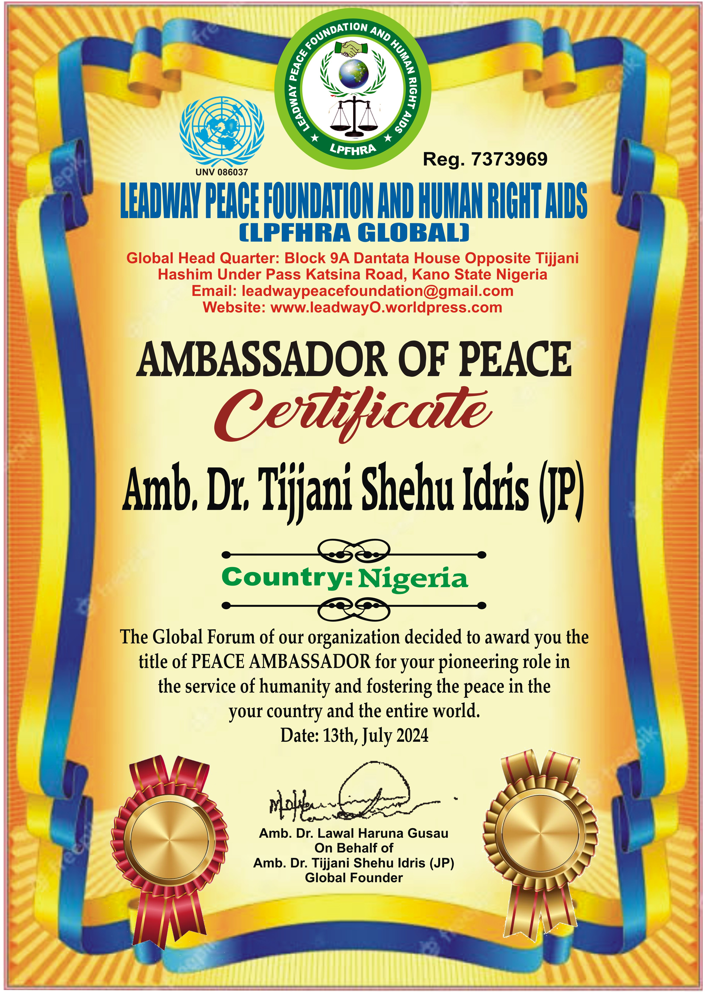
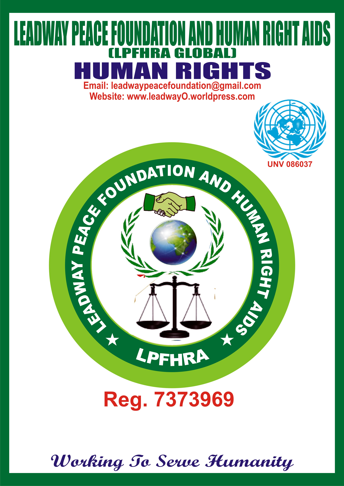

Leaway Peace Foundation and Human Rights.
(LPFHRA GLOBAL)
Here's how to file a complaint or lawsuit about human rights issues:
1. **Filing a Complaint**: If your phone is lost, make sure you have registered it at Bebeji Plaza, or through the Bebeji Plaza web app. This will help us to find out where the phone is easily.
2. **Fill in Phone Details**: Fill in your phone details correctly. Make sure you enter the email address that was used to purchase the phone or your email and phone number. You can enter two phone numbers for additional verification.
3. **Submit Complaint**: You can contact us by phone or send us your complaint now by clicking on the menu below.
In this way, we can help you quickly and easily in solving your problems.
The Leaway Peace Foundation and Human Rights (LPFHRA GLOBAL) is diligently working to ensure a better life for Nigerians by protecting human rights and promoting peace within communities. Here are some of the ways this organization assists the community:
1. **Protecting Human Rights**: LPFHRA GLOBAL ensures that every Nigerian has access to justice in court, healthcare, and quality education. This helps to enhance the overall quality of life in the community.
2. **Promoting Peace**: The organization conducts awareness campaigns and programs aimed at maintaining peace among different communities. This helps to reduce violence and ensure lasting peace.
3. **Bringing Positive Change**: LPFHRA GLOBAL collaborates with governments and non-governmental organizations to implement changes that improve the lives of citizens. Through this work, a favorable environment is created for everyone.
4. **Supporting the Vulnerable**: The organization assists the less fortunate and those who have been oppressed through legal aid, food support, and physical and mental healthcare. This helps to ensure that everyone has the opportunity to live a good life.
5. **Community Awareness**: LPFHRA GLOBAL runs awareness programs about human rights and the importance of peace. This helps to build a community that understands each other and fosters increased unity.
The Leaway Peace Foundation and Human Rights (LPFHRA GLOBAL) aims to ensure that every Nigerian lives in justice, peace, and comfort. Join us to create a better life for everyone. Bring your complaints so we can work together to find solutions and improve community life.
**Together, we can achieve our goals!**
Contact Now (Kira Yanzu)